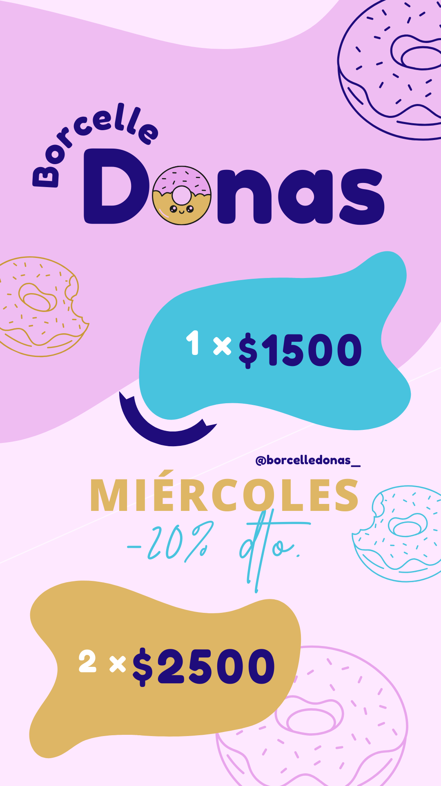
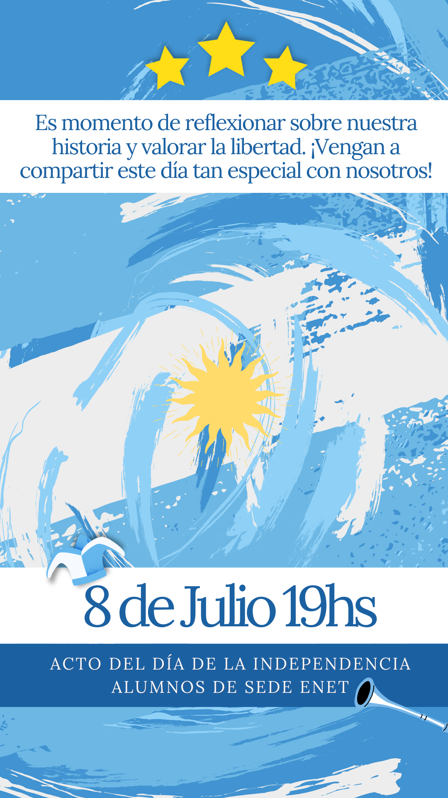
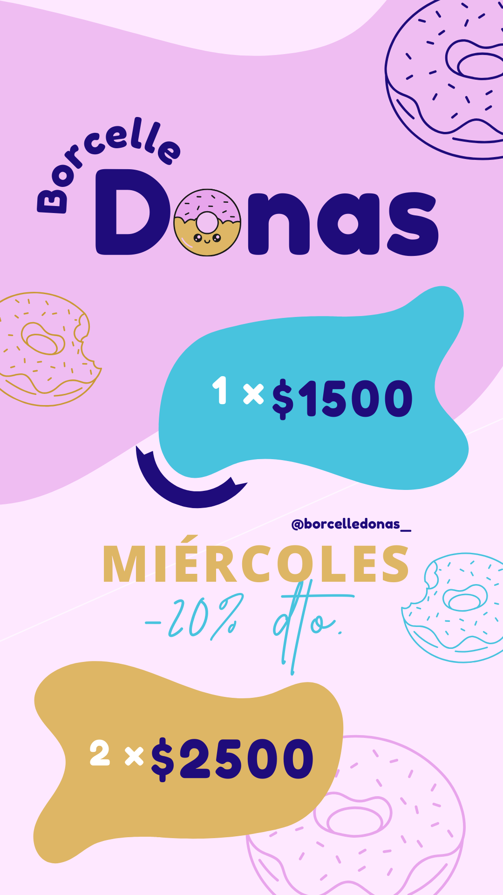
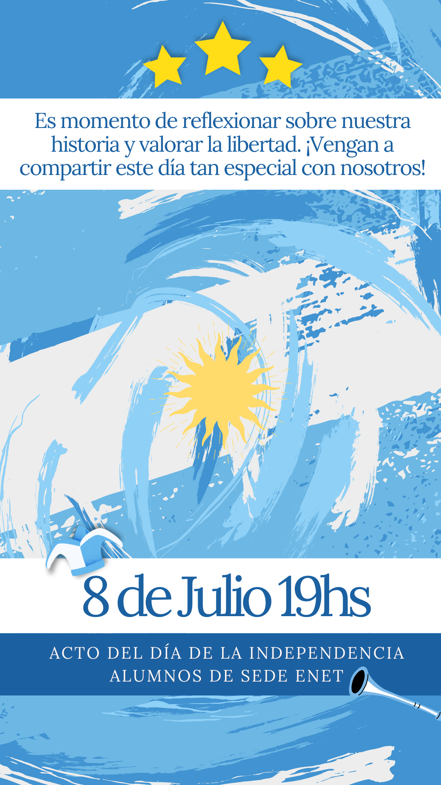

Sobre Mí
Soy Jesica D'Angelo, Diseñadora y Fotógrafa. Con una base sólida en Diseño, Imagen y Sonido y una gran pasión por la fotografía, he desarrollado una mirada creativa y versátil.
Mi misión es capturar momentos auténticos y llenos de emoción para crear imágenes que perduren en el tiempo. Creo que la fotografía es un arte que conecta personas y cuenta historias a través de una sola imagen.
En cada proyecto, busco el equilibrio entre creatividad y profesionalidad, adaptándome a diferentes estilos y necesidades para dar vida a tus ideas.
Me apasiona el cine, en especial de animacion, por eso me interesa filmar para producciones audiovisuales. Ademas, para generar contenido digital para redes sociales.
Servicios
Guiones Audiovisuales
Tanco técnicos como literarios para diferentes producciones audiovisuales, desde comerciales hasta documentales.
Storyboard y Moodboard
Detallados para visualizar la historia y el estilo de tu proyecto antes de la producción.
Manual de Marca
Incluye: Mision y Vision, Valores y Historia, Analisis FODA - 4C y 4P, Buyer Persona, Logotipos, Paleta de Colores, Tipografia, Packaging, Estilo Fotografico, Aplicaciones y otros escenciales.
Gestión de
Contenidos Digitales
Optimizo tu presencia en línea a través de contenidos creativos y estratégicos, generando mayor visibilidad y oportunidades de negocio.
Diseño Gráfico
Diseño flyers informativos y publicitarios personalizados para tus campañas.
Producción de Sonido
Para Suentos Sonoros o Radio Teatro y para Segmentos de Radio.
Proyectos Realizados
 



Carrera Diseño, Imagen y Sonido
Clientes
Testimonios
“Excelente trabajo, muy profesional y creativa.”